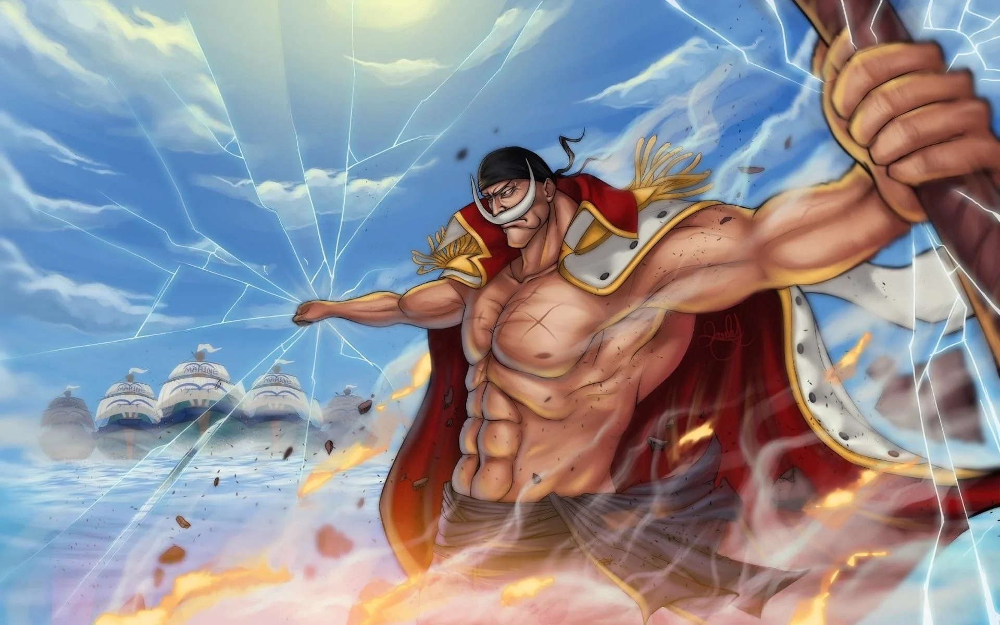

O arco Marineford, também conhecido como Arco Guerra dos Melhores, é o 22° arco da história da série One Piece e o quarto na Saga Guerra de Marineford. Este arco emocionante segue a jornada de Luffy e seus companheiros enquanto eles tentam resgatar Ace, que foi capturado pela Marinha e está prestes a ser executado.
Com altas probabilidades de não conseguirem completar a missão de resgatar Ace, a vinda ameaçadora de Barba Branca e as segundas intenções de piratas que desejam derrubar o Yonkou, Luffy se esforça para se aproximar do seu sonho nesse embate titânico de poderes. O arco é cheio de reviravoltas e momentos emocionantes que têm mantido os fãs grudados em suas telas.
Os fãs têm elogiado a narrativa emocionante e os personagens bem desenvolvidos do arco Marineford. Muitos consideram este arco um dos melhores da série até agora. Se você ainda não assistiu ao arco Marineford de One Piece, agora é a hora perfeita para começar! 😊